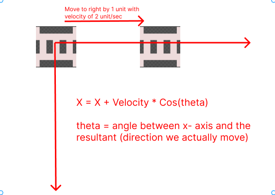
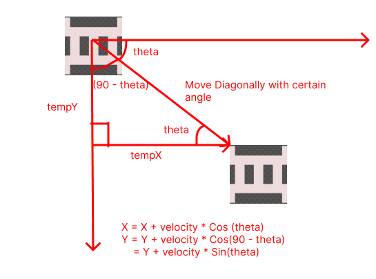

Adding Life to the Enemy
Our enemy do nothing as we now, I want the enemies to move towards our player, and when it collides with our player, the life count of the player reduces.
The Pythagoras Theorem
Since the enemy will be moving towards the player, we need to determine the path (or angle) at which enemy move. This is where the Pythagoras theorem comes in.

tempY is the vertical distance between the enemy and the player while tempX is the horizontal distance between the enemy and player.
To calculate the hypo (hypotenuse), we can use pythagoras theorem as,
\(\ hypo = \sqrt{(tempY)^2 + (tempX)^2} \)
tempX and tempY can be calculated as:
tempX = x1 - (x + sprEnemey->width / 2);
tempY = y1 - (y + sprEnemy->height);
Note that the coordinates here are based on the above image.
So we can now calculate the value of sin(theta) and cos(theta).
From basic mathematics we have,
sin(theta) = height_of_perpendicular / hypotenuse
which in our case turns out to be,
sin(theta) = tempY / hypo
Similarly,
cos(theta) = base / hypotenuse
which in our case turns out to be,
cos(theta) = tempX / hypotenuse
What to do with the angles?
Remember that, when we moved to some X direction, we simply added the
speed to the x coordinate and when we moved to some Y direction, we
added the speed to the 'y' coordinate in case of the player.
But things slightly change here, since we are following the player, we have to choose the shortest path. i.e. We won't only move in single direction(either X or either Y), we have to move diagonally which means we have to travel some X and some Y distance at the same time. In fact we will travel with certain angle along the X and Y direction. Let us look at things in some detail, 
When we are moving horizontally, it looks like we are just adding the x coordinate to the velocity, but in fact, what we really do is,
X = X + Velocity * cos(theta)
Where theta = angle between x-axis and the direction we move in, which is 0.
so, X turns out to be,
X = X + Velocity * cos(0)
= X + Velocity
Similarly for the vertical movement,

When we are moving vertically downwards, X coordinate remains constant and Y can be calculated as:
Y = Y + Velocity * Cos(theta)
where theta is the angle between Y-axis and the resultant.
So in this case,
Y = Y + Velocity * Cos(0)
= Y + Velocity
Now let us focus on diagonal movements, 
When we move diagonally, there is change in both X and Y coordinate, to calculate them, we will simply use the concept we used earlier,
X = X + Velocity * Cos(theta)
Y = Y + Velocity * Cos(90 - theta)
= Y + Velocity * Sin(theta)
Note that, When we move diagonally, the angle between Y-axis and the resultant
is (90 - theta), and Cos(90 - theta) = Sin(theta), so we multiply by Sin(theta) in case of Y.
Implementation
Too much talk till now, let us write some code then,
Update the OnUserUpdate method to have following snippets:
for(auto &elm : vEnemy){
if(elm.alive)
{
float tempX = (fPlayerPositionX + sprPlayer->width / 2
) - elm.x + sprEnemy->height + sprEnemy->width / 2
);
float tempY = (fPlayerPositionY - elm.y + sprEnemy->height);
// simple pythagoras theorem
float tempHypo = powf(tempX, 2) + powf(tempY, 2);
float Hypo = sqrtf(tempHypo);
float sinTheta = (tempY / Hypo);
float cosTheta = (tempX / Hypo);
elm.x = elm.x + fEnemyVel * cosTheta * fElapsedTime;
elm.y = elm.y + fEnemyVel * sinTheta * fElapsedTime;
break;
}
}
We iterated through every enemy in the Enemy vector and then
we calculated the values of tempX and tempYusing the techniques we discussed earlier,
and then calculated the hypotenuse and values of sin(theta) and cos(theta).
And then simply calculated the new coordinates.
elm.x = elm.x + fEnemyVel * cosTheta * fElapsedTime;
elm.y = elm.y + fEnemyVel * sinTheta * fElapsedTime;
Note the inclusion of fElapsedTime, anything in a motion
should have its velocity multiplied by fElapsedTime.
There is a break statement at the end of the end block,
this is because we only want to move our enemy one at a time.
When you run this program, you should see one of the enemy following the player:

But we will need to kill the enemy when the collsion takes place, that is set for the next chapter.